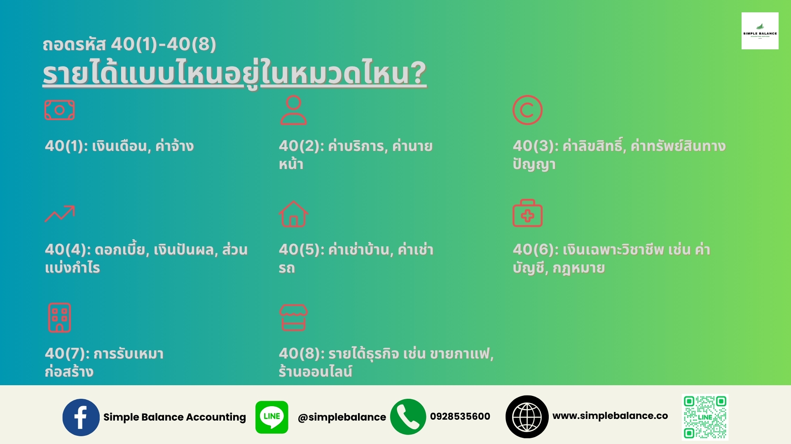
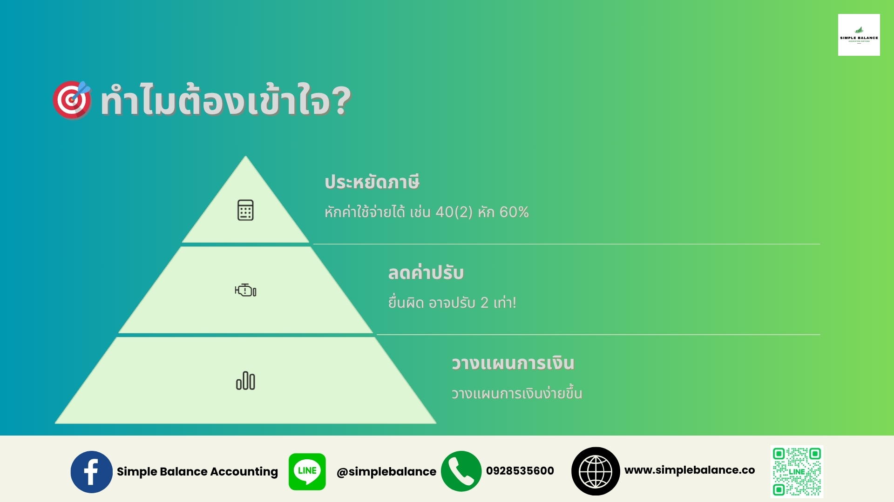

เรียนรู้ว่ามาตรา 40(1) และวงเล็บอื่น ๆ” คืออะไร? SME หน้าใหม่ต้องรู้!
เคยมั้ย จู่ๆ นักบัญชีโทรมาบอกว่า “ต้องยื่นภาษี 40(1) นะ” หรือ “รายได้นี้เข้าข่าย 40(3)!”แล้วคุณก็งงเป็นไก่ตาแตก 🤯 คำศัพท์พวกนี้มันอะไรกัน? ไม่ต้องกังวล! ที่ Simple Balance ทีมบัญชีจากที่ช่วย SME ทั่วไทย เราจะมาแปล “ภาษานักบัญชี” ให้เข้าใจง่ายแบบไม่ต้องปวดหัว เริ่มที่รหัสลับ 40(1)-40(8) กันเลย!
“40(1)-40(8)” คืออะไร? ทำไม SME ต้องสนใจ?
ในภาษาของกรมสรรพากร 40(1)-40(8) มาจาก มาตรา 40 แห่งประมวลรัษฎากร ซึ่งเป็นหมวดที่กำหนดว่า รายได้แบบไหน ต้องเสียภาษีเงินได้บุคคลธรรมดา ถ้าคุณเป็นเจ้าของ SME หรือฟรีแลนซ์ รายได้จากธุรกิจอาจเข้าข่ายหนึ่งในนี้ และคุณต้องรู้ว่าแต่ละประเภทมีวิธีคำนวณภาษีต่างกัน! ถ้าไม่เข้าใจ อาจเสียภาษีมากเกินไป หรือแย่กว่านั้น—โดนปรับ!
มาถอดรหัสทีละตัวกันแบบชิลๆ:
ถอดรหัส 40(1)-40(8): รายได้แบบไหนอยู่ในหมวดไหน?
- 40(1) - เงินเดือน ค่าจ้าง: ถ้าคุณจ่ายเงินเดือนตัวเองจากบริษัท หรือเป็นฟรีแลนซ์รับค่าจ้าง รายได้นี้คือ 40(1) เช่น ค่าจ้างออกแบบกราฟิก 20,000 บาท
- 40(2) - ค่าบริการ ค่านายหน้า: รายได้จากงานบริการ เช่น ค่าที่ปรึกษา ค่าคอมมิชชัน หรือค่าเชิญไปพูดในงาน
- 40(3) - ค่าสิทธิ เช่น ลิขสิทธิ์: ได้เงินจากลิขสิทธิ์งานสร้างสรรค์ เช่น ขายภาพถ่าย หรือเขียนนิยายแล้วได้ส่วนแบ่ง
- 40(4) - ดอกเบี้ย เงินปันผล: เช่น ดอกเบี้ยจากบัญชีออมทรัพย์ หรือเงินปันผลจากหุ้นที่คุณถือ
- 40(5) - ค่าเช่าทรัพย์สิน: ได้เงินจากให้เช่าบ้าน รถ หรือที่ดิน
- 40(6) - รายได้จากวิชาชีพ: เช่น รายได้ของหมอ ทนาย หรือวิศวกรที่ทำงานอิสระ
- 40(7) - รายได้จากงานรับเหมา: เช่น รับเหมาก่อสร้าง หรือทำโปรเจกต์ใหญ่
- 40(8) - รายได้อื่นๆ จากธุรกิจ: รายได้ทั่วไปจากธุรกิจ SME เช่น ขายของออนไลน์ ร้านกาแฟ ร้านอาหาร
ตัวอย่าง: ถ้าคุณเปิดร้านกาแฟในเชียงใหม่ รายได้จากการขายกาแฟเข้าข่าย 40(8) แต่ถ้าคุณรับงานออกแบบโลโก้ข้างๆ รายได้นั้นอาจเป็น 40(2) ถ้าไม่แยกให้ชัด อาจเสียภาษีผิดประเภท!
ทำไมต้องเข้าใจมาตรา 40 แห่งประมวลรัษฎากร
- ประหยัดภาษี: แต่ละประเภทมี “ค่าลดหย่อน” และวิธีคำนวณภาษีต่างกัน เช่น 40(2) และ 40(3) หักค่าใช้จ่ายได้สูงถึง 60%!
- หลีกเลี่ยงค่าปรับ: ถ้ายื่นภาษีผิดประเภท กรมสรรพากรอาจเรียกตรวจและปรับได้ถึง 2 เท่าของภาษีที่ต้องจ่าย!
- วางแผนการเงิน: รู้ว่ารายได้ไหนเสียภาษีเท่าไร ช่วยให้จัดการเงินง่ายขึ้น
Simple Balance: แปลภาษานักบัญชีให้เป็นภาษาคน
ที่ Simple Balance เราเข้าใจว่า SME หน้าใหม่ไม่อยากปวดหัวกับศัพท์บัญชีอย่าง 40(1)-40(8) ทีมงานของเราจึง:
- อธิบายง่าย: แปลรหัสนักบัญชีให้เข้าใจใน 5 นาที ไม่ต้องงง!
- ตอบไว 24/7: มีคำถามเรื่องภาษี? ทัก Line หรือโทร 0928535600 ได้ทุกเวลา
- ครบจบ: ช่วยจัดการบัญชี วางแผนภาษี แถมออกใบเสนอราคา-ใบแจ้งหนี้ให้ลูกค้าคุณ โดยรวมในค่าบริการ
ในเวลาไม่ถึง 2 ปี เราได้ช่วย SME กว่า 100 รายทั่วไทย จดทะเบียนธุรกิจกว่า 30 ราย และทำให้เรื่องบัญชีเป็นเรื่องง่ายสำหรับผู้ประกอบการหน้าใหม่!
เริ่มถอดรหัสภาษานักบัญชีกับเราวันนี้!
อย่าปล่อยให้ศัพท์อย่าง 40(1)-40(8) มาทำให้คุณสับสน! ติดต่อ Simple Balance เพื่อปรึกษาฟรี ทีมงานจากเชียงใหม่พร้อมช่วย SME ทั่วไทยให้เข้าใจบัญชีและภาษีแบบชิลๆ
พร้อมหรือยัง? ติดต่อซิมเปิล บาลานซ์ วันนี้เพื่อปรึกษาฟรี! โทร 0928535600 หรือคลิก ที่นี่